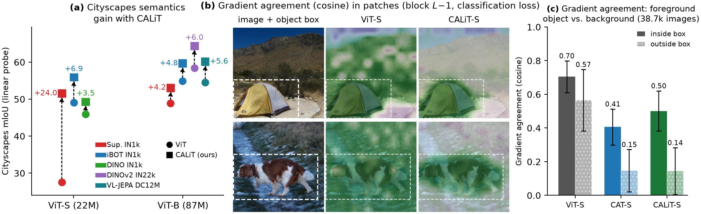
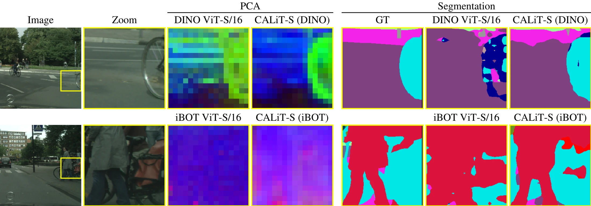
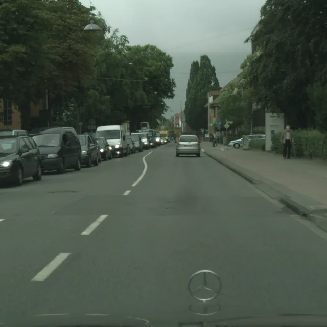
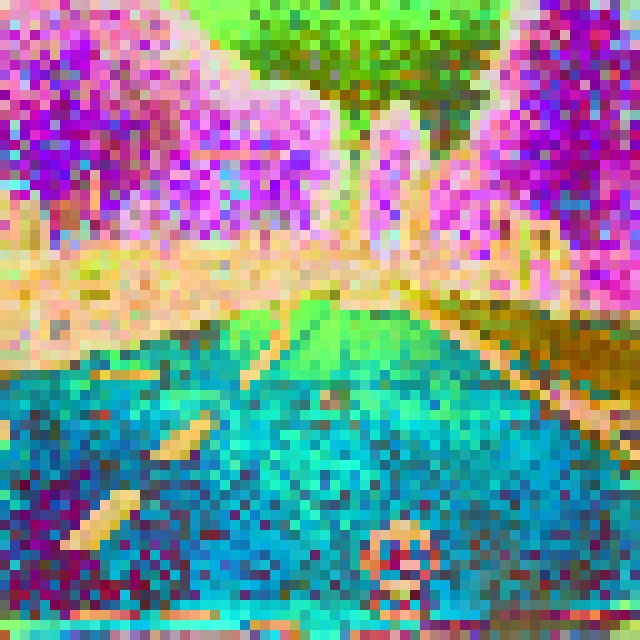
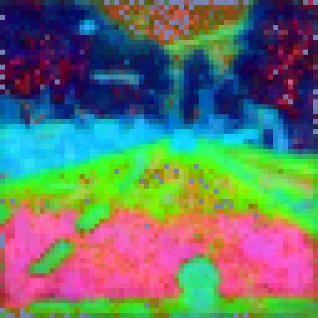
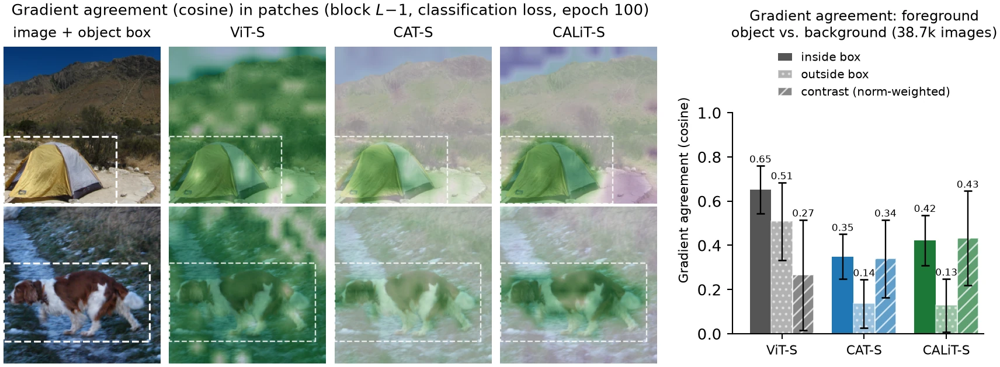
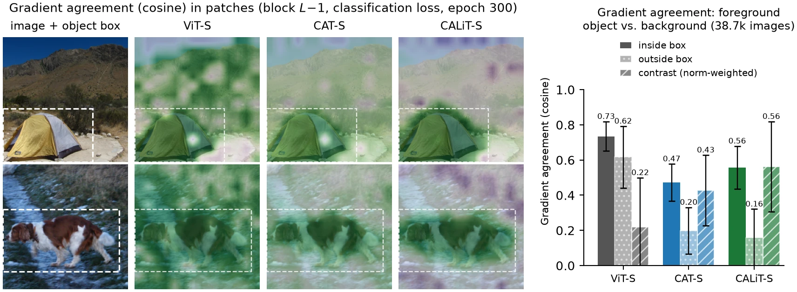
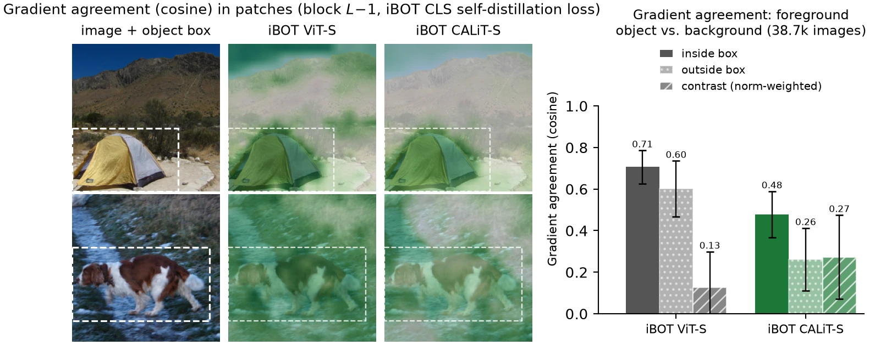
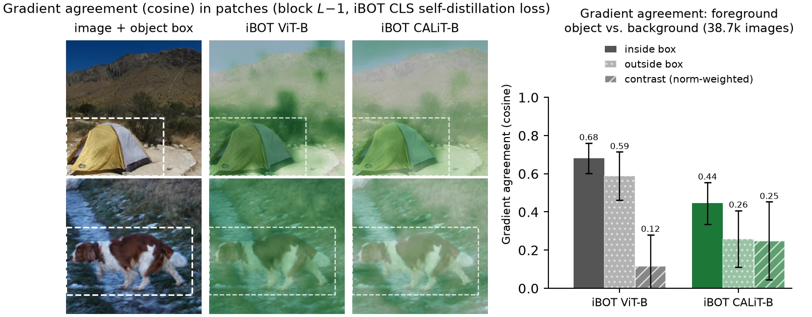

CALiT · Cross Aggregation and Local Mixing Transformer
1INSAIT, Sofia University "St. Kliment Ohridski"2vivo Mobile Communication Co., Ltd.

A Vision Transformer (ViT) is tasked to learn both a useful global representation through the CLS token and distinct local semantics through patch tokens. Yet a loss on the CLS token does not always induce learning of discriminative patch tokens. We theoretically observe that a CLS-based loss induces low rank patch gradients and in practice, most patches receive similar gradients. Adding patch-based losses may not compensate for the strong unidirectional CLS induced gradients. Consequently, even under global-local objectives, patch updates can remain insufficiently differentiated and spatially correlated. We therefore introduce cross-aggregation, which redefines the CLS token by aggregating patch-level concept heads in the expanded FFN space of every block. This parameter-free operation adds only 0.6% FLOPs to ViT-S and more directly couples global semantics to patch tokens. Combined with local depth-wise convolutions, it further improves the patch semantics, in a variety of pre-training methods. Together, these components form the Cross Aggregation and Local Mixing Transformer (CALiT). CALiT consistently improves semantic probes under both global-only and global-local pre-training objectives and vision-language finetuning. In particular, CALiT improves thin class semantics mean IoU by double digits in many pre-training/linear probe pairs and provides moderate gains in all other local semantics.

Six val frames drawn at random with a fixed seed, not selected. Pick a pre-training and a frame.



Top three principal components of the frozen last-layer patch features, as RGB, on a 1024×1024 crop (64×64 patches). PCA is fitted per model and per image, so colours carry no meaning across panels: compare the structure, such as poles, pedestrians and lane markings.
CALiT changes only the FFN. After fc1 and GELU, each token's
4D-wide hidden is read as S slots of concepts, and two light modules act on it in parallel before
fc2.
# x: (1+N, D) tokens, CLS first, patches on a √N×√N grid. S slots, H heads (as in SA). y = x + SA(LN(x)) h = GELU(W1(LN(y))) # (1+N, 4D) h_c = h[:1]; h_p = h[1:] # split the CLS row from the N patch rows # cross aggregation: parameter-free, MHA without projection weights C = h_c.reshape(S, 4D/S) # CLS slots: queries P = h_p.reshape(N*S, 4D/S) # patch slots: keys and values (un-mixed h_p) h_c_new = MHA_H(C, P, P).reshape(1, 4D) # local mixing: depthwise 3×3, Dirac-initialised, patches only G = h_p.T.reshape(4D, √N, √N) h_p_new = DWConv3x3(G).reshape(4D, N).T z = y + W2(concat[h_c_new, h_p_new]) return z
We take the gradient of each model's own CLS loss with respect to the 196 patch tokens entering the last block, on all 38,651 ImageNet-val images whose object box leaves at least one patch outside. Two questions: how many directions does that gradient span, and does it single out the object?
| pre-training | CLS loss | 2nh | effective rank ↑ | contrast ↑ | CALiT > ViT | ||
|---|---|---|---|---|---|---|---|
| ViT | CALiT | ViT | CALiT | ||||
| supervised IN-1k, ViT-S/16 | cross-entropy | 12 | 12.1 | 37.0 | 0.22 | 0.56 | 91 % |
| iBOT IN-1k, ViT-S/16 | CLS self-distillation | 12 | 13.0 | 44.8 | 0.13 | 0.27 | 83 % |
| iBOT IN-1k, ViT-B/16 | CLS self-distillation | 24 | 20.3 | 53.1 | 0.12 | 0.25 | 82 % |
Structure of the patch gradient at the input of the last block. Effective rank: entropy-effective rank of the 196×D gradient matrix; a plain ViT is bounded by 2nh (two routes per head). Contrast: agreement with the mean in-box gradient direction, inside minus outside the box, each patch weighted by its gradient norm. Last column: share of images on which CALiT's contrast exceeds ViT's; its effective rank exceeds ViT's on ≥ 99.9 % of images.




dense-probe comparisons won by CALiT over its ViT: 7 pre-training setups on 4 datasets, wherever the baseline is reported.
mIoU on Cityscapes for supervised ViT-S, the largest single gain.
pre-training epochs for CALiT-S with DINO and iBOT, against 800 for the public ViT-S checkpoints it outperforms.
| model | pre-training (ep.) | IN-1k top-1 | ADE20K ↑ | VOC ↑ | Cityscapes ↑ | COCO-Stuff ↑ |
|---|---|---|---|---|---|---|
| ViT-S/16 · supervised IN-1k | ||||||
| DeiT-S/16 | sup. 300 | 79.85 | 24.48 | 60.51 | 27.53 | 29.22 |
| LocalViT-S | sup. 300 | 80.83 | 20.23 | 49.85 | 40.01 | 22.41 |
| CAT-S (CAg only) | sup. 300 | 79.96 | 29.62 | 67.68 | 46.10 | 34.79 |
| CALiT-S (ours) | sup. 300 | 80.57 | 31.65 | 71.50 | 51.56 | 36.68 |
| Δ CALiT − ViT | +0.72 | +7.17 | +10.99 | +24.03 | +7.46 | |
| ViT-S/16 · self-supervised IN-1k, iBOT | ||||||
| iBOT ViT-S/16 | iBOT 800 | 77.9 lp | 29.78 | 66.67 | 49.09 | 34.71 |
| CALiT-S (ours) | iBOT 300 | 76.3 lp | 32.81 | 73.78 | 55.96 | 37.97 |
| Δ | −1.6 | +3.03 | +7.11 | +6.87 | +3.26 | |
| ViT-S/16 · self-supervised IN-1k, DINO | ||||||
| DINO ViT-S/16 | DINO 800 | 77.0 lp | 23.79 | 50.41 | 45.89 | 26.08 |
| CALiT-S (ours) | DINO 300 | 75.9 lp | 27.45 | 61.47 | 49.36 | 31.48 |
| Δ | −1.1 | +3.66 | +11.06 | +3.47 | +5.40 | |
| ViT-B/16 · supervised IN-1k | ||||||
| DeiT-III-B* | sup. 400 | 81.8 | 25.4 | 61.7 | 48.9 | n/a |
| CALiT-B (ours) | sup. 300 | 82.20 | 32.23 | 71.88 | 53.09 | 37.31 |
| Δ | +0.40 | +6.83 | +10.18 | +4.19 | n/a | |
| ViT-B/16 · self-supervised IN-1k, iBOT | ||||||
| iBOT ViT-B/16 | iBOT 400 | 79.5 lp | 36.29 | 72.99 | 54.89 | 38.90 |
| CALiT-B (ours) | iBOT 300 | 79.3 lp | 37.25 | 75.82 | 59.66 | 41.08 |
| Δ | −0.2 | +0.96 | +2.83 | +4.77 | +2.18 | |
| ViT-B/16 · self-supervised IN-22K, DINOv2 | ||||||
| DINOv2 ViT-B/16* | DINOv2 600k | 80.4 lp | 38.3 | 76.6 | 58.4 | n/a |
| CALiT-B (ours) | DINOv2 600k | 77.6 lp | 38.73 | 77.37 | 64.44 | 41.51 |
| Δ | −2.8 | +0.43 | +0.77 | +6.04 | n/a | |
| ViT-B/16 · iBOT IN-1k, then vision-language fine-tuning (LeVLJEPA, DataComp-12M) | ||||||
| iBOT ViT-B/16 | iBOT 400 + VL 5k | 44.78 zs | 36.93 | 75.52 | 54.54 | 39.63 |
| CALiT-B (ours) | iBOT 300 + VL 5k | 44.65 zs | 38.57 | 77.93 | 60.14 | 41.01 |
| Δ | −0.13 | +1.64 | +2.42 | +5.60 | +1.38 | |
Semantic segmentation with a frozen backbone (Table 1 of the paper). DINOv2-style linear probe, a BatchNorm and a 1×1 convolution on the last-layer patch tokens, mIoU ↑. IN-1k top-1 is measured as each baseline does: supervised accuracy, a linear probe (lp) for self-supervised models, zero-shot (zs) after vision-language fine-tuning. Δ: CALiT minus the ViT of the same block. * mIoU as reported by Marouani et al. with the same probe. Bold: best per block. CALiT gives up a little ImageNet top-1 in 5 of the 7 settings, by 2.8 points at most (DINOv2-B).
The largest gains are on thin classes: fence, pole, traffic light, traffic sign, rider, motorcycle and bicycle. We also probe ACDC, urban driving under fog, rain and snow, with the Cityscapes head (zero-shot) and with a head trained on ACDC.
| model | pre-training (ep.) | Cityscapes val | ACDC zero-shot | ACDC trained | |||
|---|---|---|---|---|---|---|---|
| all | thin | all | thin | all | thin | ||
| ViT-S/16 · supervised IN-1k | |||||||
| DeiT-S/16 | sup. 300 | 27.41 | 12.21 | 15.41 | 6.48 | 21.62 | 10.33 |
| CAT-S (CAg only) | sup. 300 | 46.10 | 29.90 | 25.44 | 12.22 | 37.42 | 20.01 |
| CALiT-S (ours) | sup. 300 | 51.05 | 40.06 | 28.34 | 18.77 | 40.73 | 26.42 |
| Δ CALiT − ViT | +23.64 | +27.85 | +12.93 | +12.29 | +19.10 | +16.09 | |
| ViT-S/16 · self-supervised IN-1k, iBOT | |||||||
| iBOT ViT-S/16 | iBOT 800 | 48.73 | 31.01 | 32.84 | 17.54 | 40.25 | 21.41 |
| CALiT-S (ours) | iBOT 300 | 55.80 | 43.81 | 37.97 | 25.25 | 48.34 | 31.24 |
| Δ | +7.07 | +12.80 | +5.13 | +7.71 | +8.09 | +9.83 | |
| ViT-B/16 · self-supervised IN-1k, iBOT | |||||||
| iBOT ViT-B/16 | iBOT 400 | 54.75 | 37.15 | 36.28 | 22.30 | 47.00 | 26.77 |
| CALiT-B (ours) | iBOT 300 | 58.46 | 47.66 | 38.45 | 26.15 | 53.03 | 37.91 |
| Δ | +3.71 | +10.51 | +2.17 | +3.85 | +6.04 | +11.13 | |
Thin-structure segmentation and robustness (mIoU ↑, linear probe as above). thin: the 7 thin classes. ACDC zero-shot: the Cityscapes-trained head applied to ACDC val. ACDC trained: a head trained from scratch on the 1600 ACDC training images for 4k iterations, evaluated on the 400 val images.
| model | IN-1k top-1 | ADE20K ↑ | VOC ↑ | Cityscapes ↑ |
|---|---|---|---|---|
| CALiT-S (reference) | 80.57 | 31.65 | 71.50 | 51.56 |
| one change to CALiT-S, same recipe | ||||
| CAg in the last block only | 79.54 | 25.99 | 60.78 | 43.86 |
| half-width CAg | 80.64 | 29.83 | 67.29 | 50.76 |
| half-width CAg, no LMix | 80.16 | 29.17 | 67.24 | 47.72 |
| mean-pool CAg (no attention) | 80.73 | 29.54 | 66.47 | 48.19 |
| DeiT-S/16, for reference | 79.85 | 24.48 | 60.51 | 27.53 |
Single-variable ablations of CALiT-S (supervised IN-1k, linear probes as above; bold best, italic second). Placed only in the last block, CAg loses most of the dense gain: the earlier blocks still get the narrow gradient, so CAg belongs in every block. Applying CAg to half of the FFN width recovers most of the gain. A uniform mean in place of attention loses patch quality, more than half-width CAg does.
@article{chhatkuli2026calit,
title = {Vision Transformers Need Cross Aggregation for Patch Semantics},
author = {Chhatkuli, Ajad and Paudel, Pramish and Zhang, Deheng and
Wu, Kanzhi and Van Gool, Luc and Paudel, Danda Pani},
journal = {arXiv preprint},
year = {2026}
}